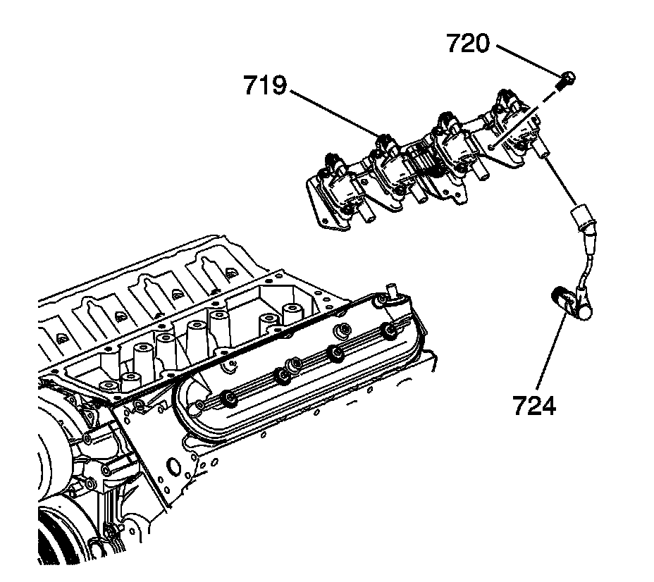
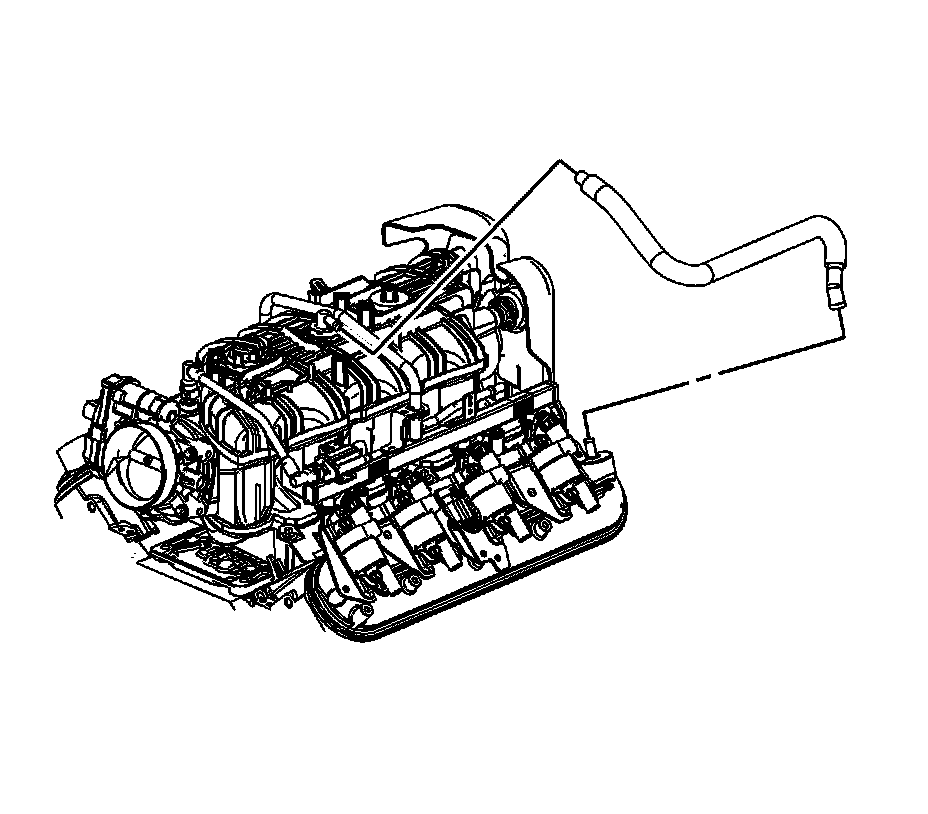
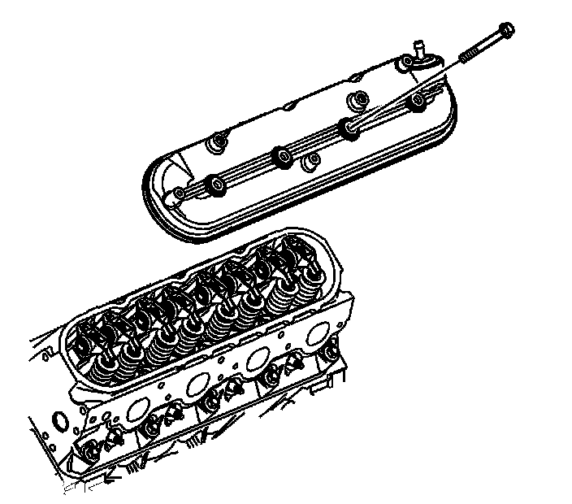

Valve Rocker Arm Cover Replacement - Left Side
Valve Rocker Arm Cover Replacement - Left Side
Removal Procedure

1. Remove the intake manifold cover. Refer to Upper Intake Manifold Sight Shield Replacement.
2. Remove the connector position assurance (CPA) retainer (2).
3. Disconnect the engine harness electrical connector (1) from the ignition coil wire harness.
4. Remove the engine harness clip (4) from the ignition coil bracket stud.
5. Reposition the engine harness, as necessary.

6. Remove the spark plug wires (724) from the ignition coils.
^ Twist each plug wire 1/2 turn.
^ Pull only on the boot in order to remove the wire from the ignition coil.
7. Remove the ignition coil bracket studs (720).
8. Remove the ignition coil bracket (719).

9. Remove the positive crankcase ventilation (PCV) hose.

10. Loosen the valve rocker arm cover bolts.
11. Remove the valve rocker arm cover.

12. Remove and discard the old gasket (1).
Installation Procedure
Important:
^ All gasket surfaces should be free of oil an/or other foreign material during assembly.
^ DO NOT reuse the valve rocker arm cover gasket.
^ If the PCV valve grommet has been removed from the rocker cover, install a NEW grommet during assembly.
1. Install a NEW rocker cover gasket (1).
2. Install the valve rocker arm cover.
Notice: Refer to Fastener Notice.
3. Tighten the rocker arm cover bolts.
Tighten the bolts to 12 N.m (106 lb in).
4. Install the PCV hose.
5. Apply threadlock to the threads of the ignition coil bracket studs. Refer to Sealers, Adhesives, and Lubricants.
6. Position the ignition coil bracket (719) onto the rocker cover.
7. Install the ignition coil bracket studs (720).
Tighten the studs to 12 N.m (106 lb in).
8. Install the spark plug wires (724) to the ignition coils.
9. Position the engine harness, as necessary.
10. Install the engine harness clip (4) to the ignition coil bracket stud.
11. Connect the engine harness electrical connector (1) to the ignition coil wire harness.
12. Install the CPA retainer (2).
13. Install the intake manifold cover. Refer to Upper Intake Manifold Sight Shield Replacement.